Na sprzedaż mój prywatny samochód Mazdy 6 w wersji kombi z wolnossącym silnikiem benzynowym 2.5 litra o mocy 192 KM oraz automatyczną skrzynią biegów. Jestem pierwszym i jedynym właścicielem samochodu od nowości – auto zostało zakupione w polskim salonie.
Samochód jest bezwypadkowy. Miał szkodę parkingową - inny samochód zahaczył o tylne, otwarte drzwi. Naprawa w ASO na oryginalnych częściach (nowe drzwi), posiadam zdjęcie uszkodzenia. W aucie nigdy nie było palone. Samochód garażowany.
Jest to najwyższa wersja wyposażenia, jaka była wówczas dostępna w salonie, która dodatkowo została doposażona w moduł Apple CarPlay oraz Android Auto. W 2023 roku auto przeszło konserwację podwozia - posiadam dokładną dokumentację przeprowadzonch prac.
Auto serwisowane regularnie, olej wymieniany co 10 000 km, kompletną dokumentację serwisową przekazuję wraz z autem. Auto sprzedaję wraz z 17 calowymi kołami zimowymi (felgi aluminiowe).
Komfort i wnętrze:
Multimedia i technologia:
Bezpieczeństwo i asystenci jazdy (i-Activesense):
Oświetlenie i stylistyka:
Zapraszam do kontaktu, cena do negocjacji. Umowa kupna-sprzedaży.
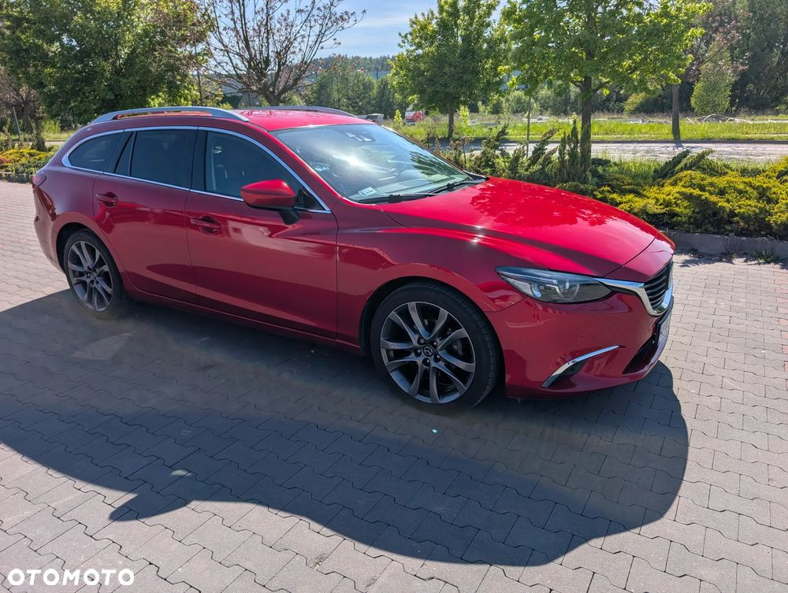
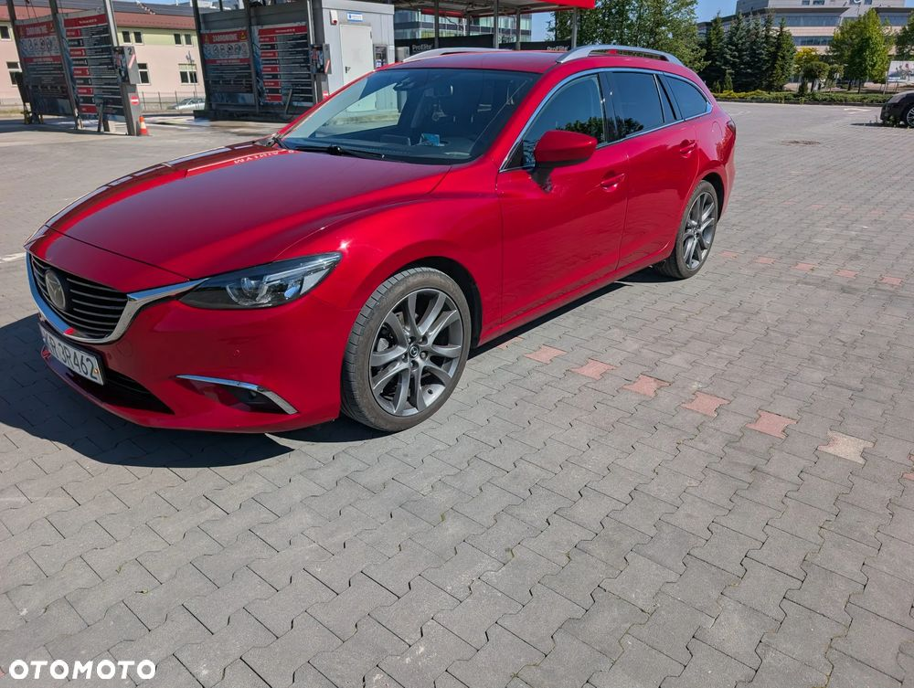
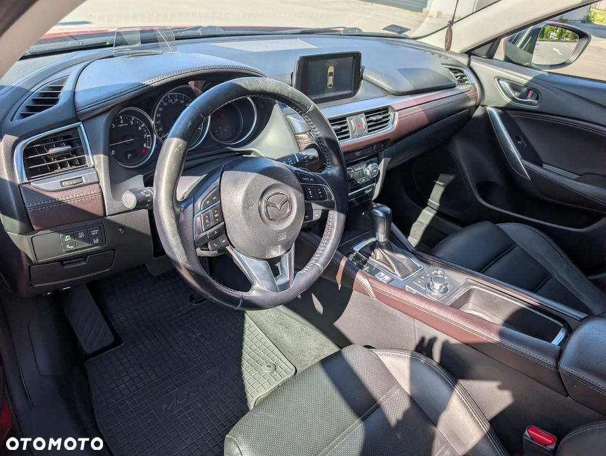
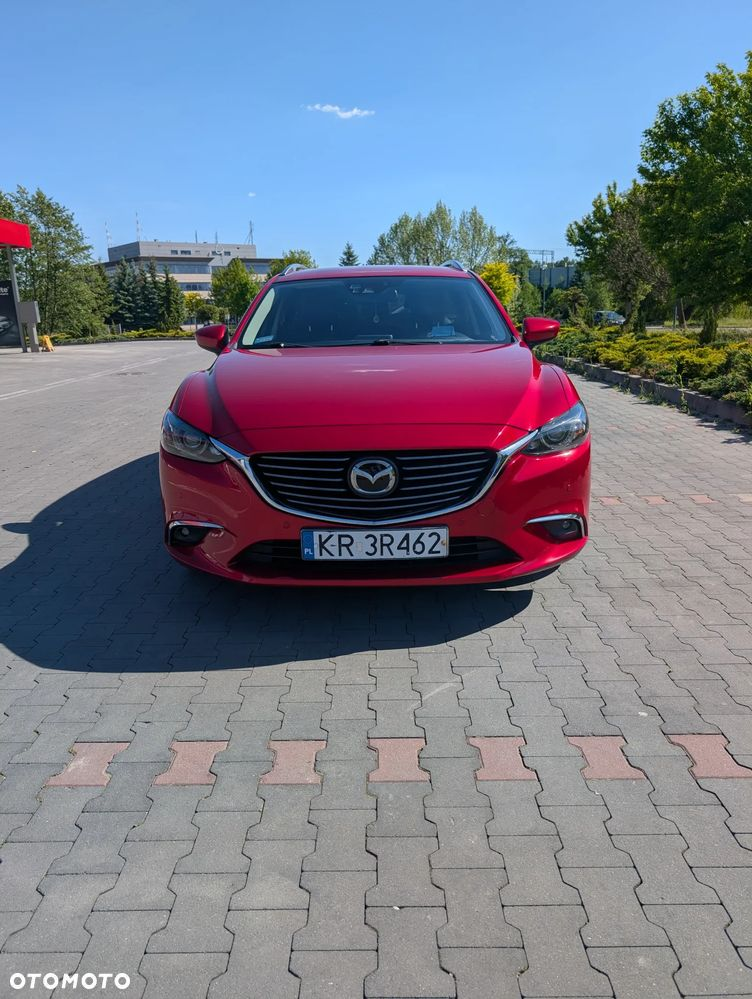
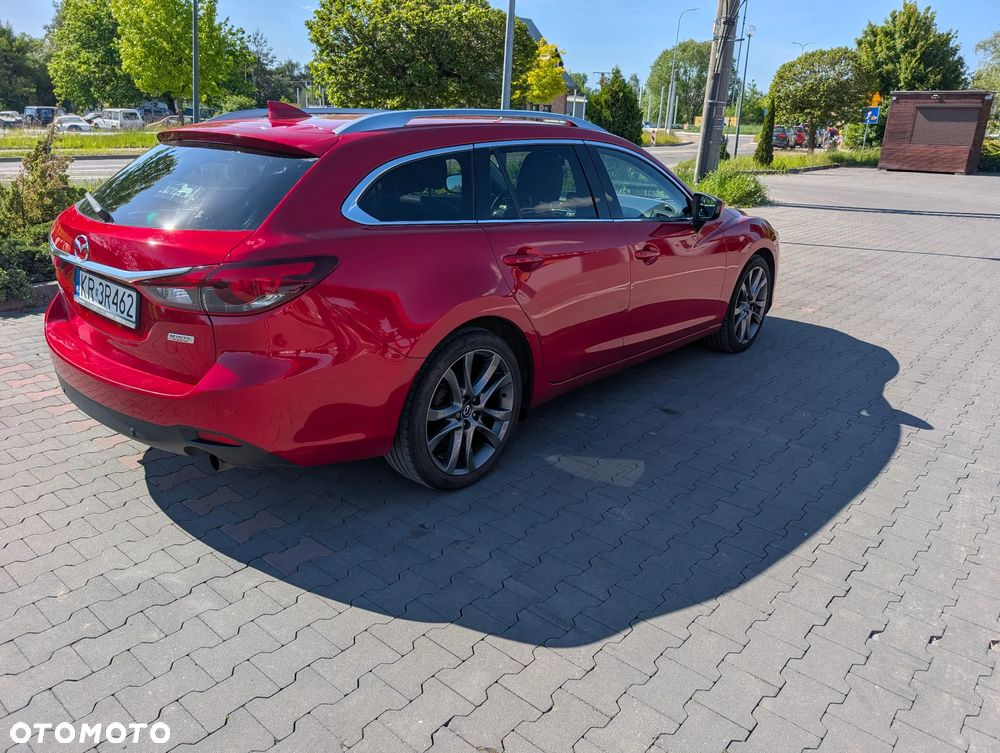
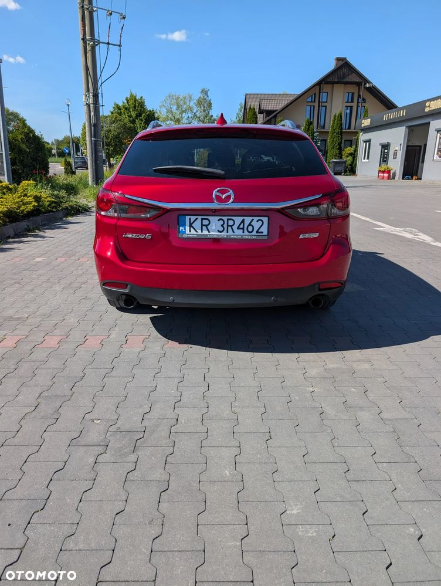
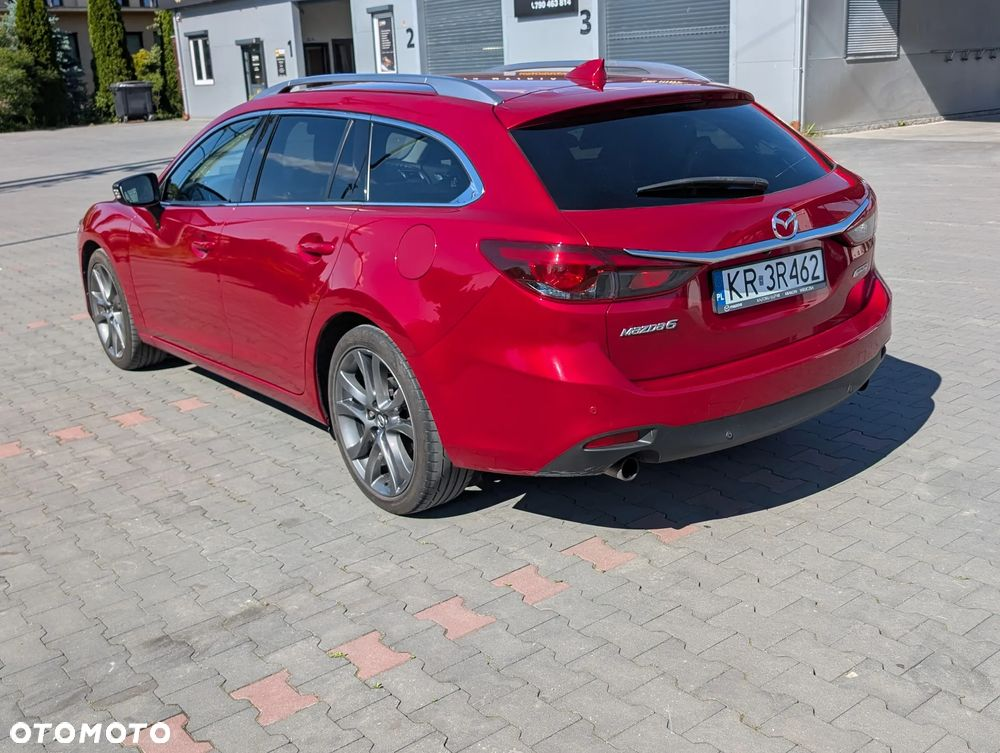
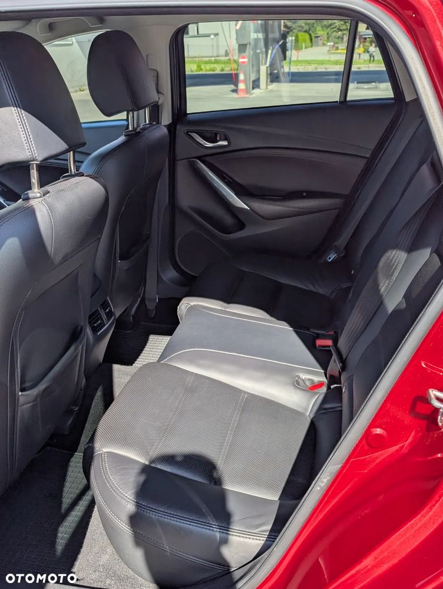
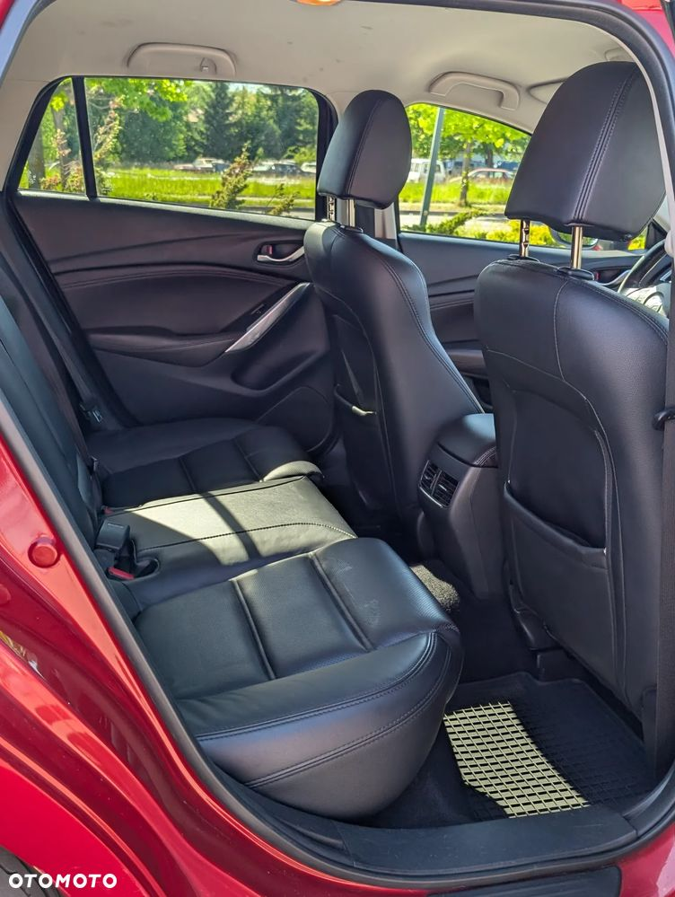
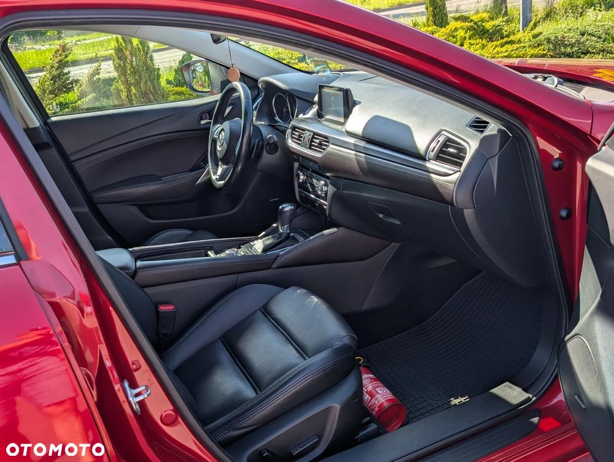
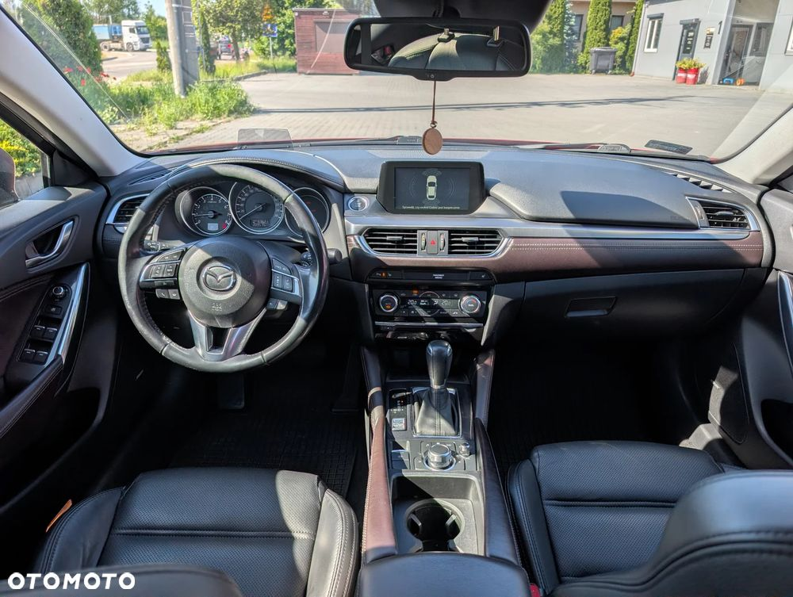
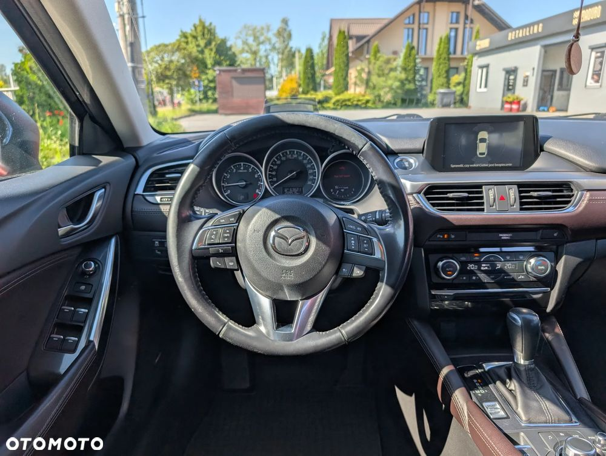